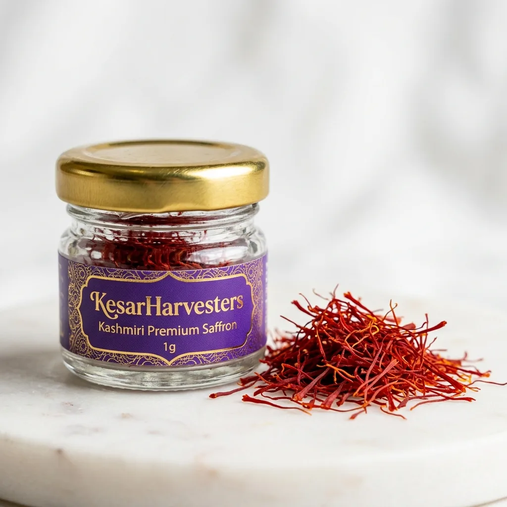
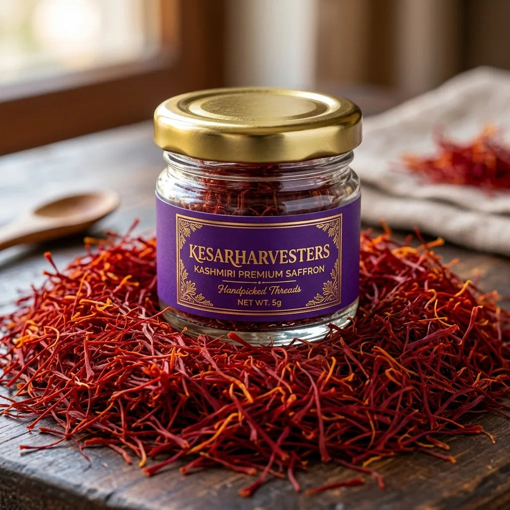
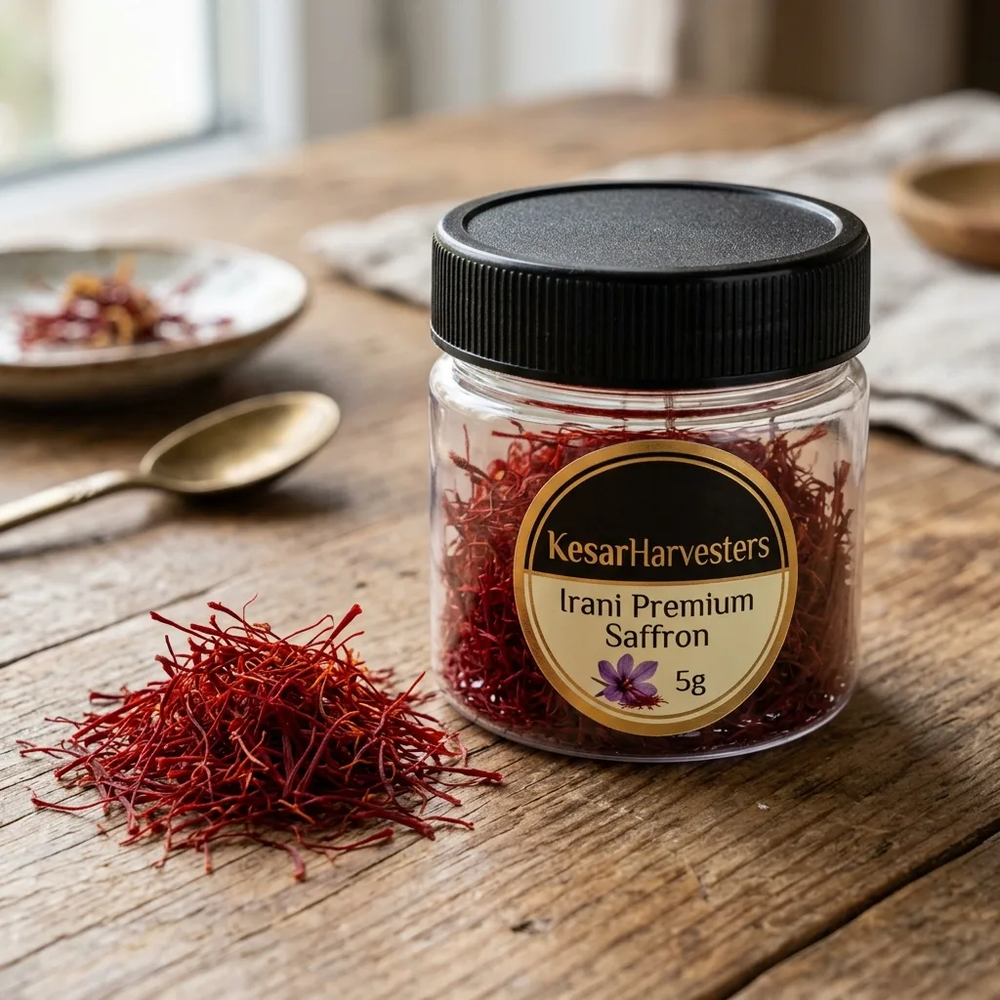

Our Sourced Collections
Premium Saffron Varieties
Select our Premium Kashmiri Premium Saffron or budget-friendly Irani Premium Saffron.
Kashmiri Premium

Premium Mogra
Kashmiri Premium Saffron (1g)
Best Seller

Premium Mogra
Kashmiri Premium Saffron (5g)
Irani Premium

Premium Sargol
Irani Premium Saffron (1g)
Irani Premium

Premium Sargol
Irani Premium Saffron (5g)
Luxury Set

Premium Gift Set
KesarHarvesters Premium Combo Pack
*Disclaimer: Product images are for representation purposes to show saffron appearance and weight quantities. The physical packaging jar design may vary based on batch weight, but we guarantee the same 100% genuine farm-fresh Kashmiri or Irani saffron quality.*